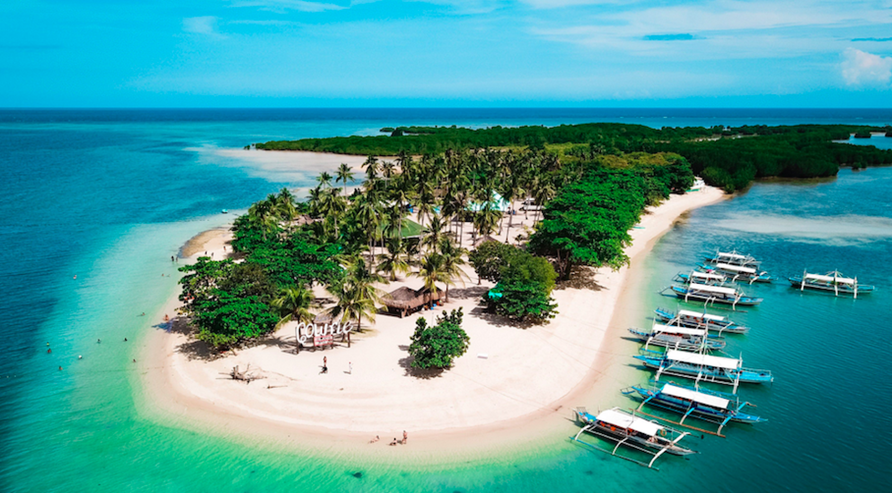

ABOUT HONDA BAY
Honda Bay, located in Puerto Princesa City, Palawan,
is one of the most popular tourist destinations in the Philippines,
known for its crystal-clear waters, white sand beaches, and vibrant marine biodiversity.
Situated along the eastern shore of Puerto Princesa,
the bay serves as a gateway to several stunning islands such as Starfish Island,
Cowrie Island, and Luli Island, each offering unique experiences for visitors.
Tourists can enjoy a variety of activities including island hopping, snorkeling, swimming,
and simply relaxing by the beach while appreciating the natural beauty of the surroundings.
The area is rich in coral reefs and marine life, making it an excellent spot for underwater exploration.
Honda Bay plays an important role in the local tourism industry,
contributing to the livelihood of many residents through eco-tourism and sustainable practices.
The calm and shallow waters make it accessible and safe for visitors of all ages,
while the scenic views provide a peaceful escape from busy city life. With its combination of natural beauty,
recreational opportunities, and cultural significance,
Honda Bay continues to be a must-visit destination for both local and
international travelers seeking relaxation and adventure in Palawan.